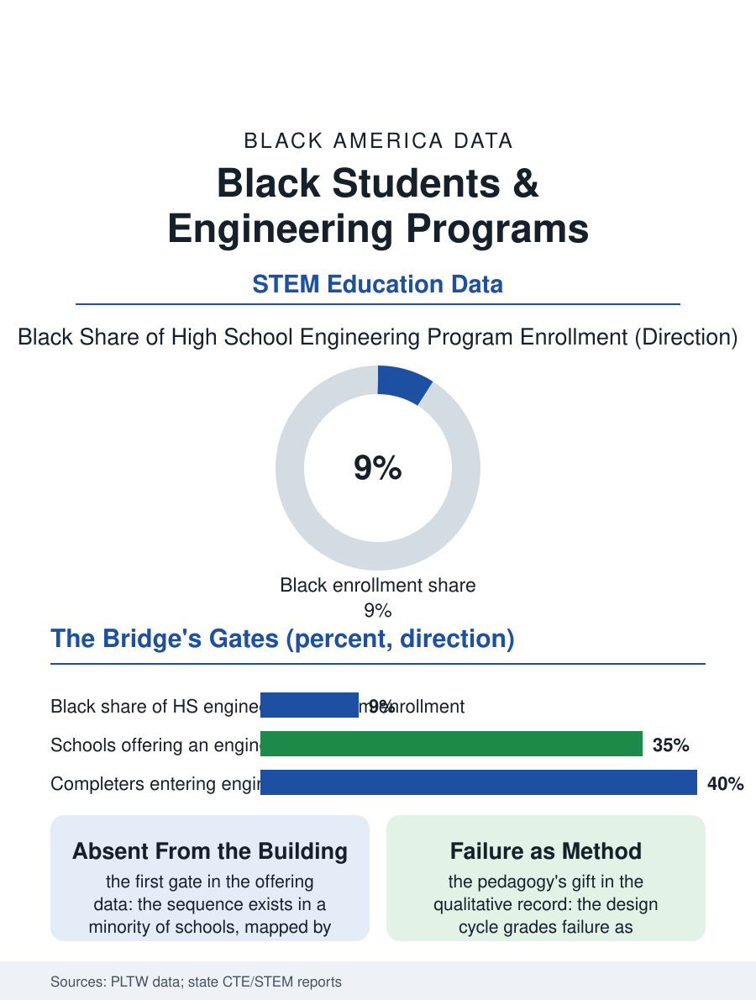

Black Education
Failure as Method: Black Students and Engineering Programs
The design cycle's gift of failure as method, behind two gates: the building that offers it and the track that feeds it. The engineering program file.

The high school engineering program, the Project Lead The Way classroom and its kin, is the STEM file's bridge between the mathematics classroom and the engineering profession of the drawing board file, and its enrollment by race is the profession's future stated early: Black students participate below their share, in a program whose presence in the school is itself rationed. This article reads the engineering program file.
The Lab of Problems
The curriculum's form is the design brief: the student team given the problem and the constraints, the prototype built and tested and failed and rebuilt in the engineering cycle the profession practices, a pedagogy whose evidence in the engagement literature is the strongest of the STEM reforms and whose resource demands, the lab's equipment and the teacher's industry fluency, are the program's rationing variables in the pattern of the media lab's refresh cycle. The school's offering is the first gate: the engineering sequence exists in a minority of high schools nationally, its map following the funding file's in the pattern of every advanced offering, so that the Black student's first exclusion is the course's absence from the building, a datum the program's advocates place at the head of their expansion case. The dual credit and the industry's recognition, the college engineering programs' admission readers crediting the sequence's completion, give the completer's file its currency in the admissions' own terms. The robotics team's season runs inside the program as its interscholastic form in the pattern of the other shops' contests, the build's six weeks being the design cycle at competition tempo, with the alliances and the pit crews teaching the industry's collaboration under the clock the judges keep. The capstone's defense, the design presented to the panel of the industry's engineers in the program's final term, is the profession's rite administered early, its questions the same the drawing board file's juniors face, and the students' accounts of it use the word real in the way the file has learned to trust.
The Profession's Mirror, Early
The enrollment's composition inside the offering schools is the file's second gate: the sequence's recruitment from the mathematics track's top, the counselor's suggestion and the student's self-sorting compounding, so that the program reproduces in miniature the funnel the architects file laments at the profession's scale, with the interventions that move it, the middle school's exposure and the cohort's recruitment by the students already in, being the file's constructive data in the pattern of the other pipelines'. The girls' enrollment line rises in the recent data ahead of the profession's own, the school's program being, as in the booth files, where the image changes first. The teacher's industry fluency is the lab's binding input as in the media file, recruited against the engineer's salary in the pattern of the trade instructors' arithmetic.
Failure, Taught
The engineering file closes on the pedagogy's distinctive gift, because the design cycle is the one school experience that grades the failure as the method rather than the verdict, the prototype's collapse being the lesson the worksheet cannot give, and the students for whom the school's other rooms have recorded mostly verdicts meet, in this lab, a discipline whose first principle is that the bridge falls so that the engineer learns, a reframe whose effect on the tracked student's standing in his own education the qualitative literature describes in the language of rescue. The expansion's funding is the file's policy frontier. The association counts the programs in the thousands of schools. The file's last entry is the bridge test's Saturday, the balsa structure under the increasing load in the silent lab, the class's held breath the same as the electrical wall's, in the room where failure is the curriculum and the students the other files wrote off are, for once, ahead of the lesson. The panel's hardest question, in the defenses the file reviewed, is always the same the profession asks itself: what would you build differently, knowing what the test just taught you. The students who answer it best are not always the ones whose bridges held the longest, a grading heresy the panel practices openly and the class absorbs as the profession's first mercy.
More in Black Education
Black Educational Attainment: High School Parity, the College Gap
About 89 percent of Black adults hold a high school diploma and one in four holds a bachelor's degree or higher — the attainment ladder, the college completion gap, and the generational trend.
Historically Black Colleges and Universities: Enrollment and Degrees
More than 100 HBCUs enroll roughly 290,000 students and award about one in six Black bachelor's degrees — an outsized share from a small sector. The federal education data.
Black College Enrollment: 2.4 Million Students
About 2.4 million Black students are enrolled in American colleges — nearly two-thirds of them women. The NCES enrollment data by sector, level, and trend.
Source: Project Lead The Way participation data; state STEM education reports; engineering pipeline research.